Gergő Pintér, PhD
gergo.pinter@uni-corvinus.hu
We would like you to create a flashcard app for smartphones. Just the usual stuff: it shows cards and then if needed it shows the other side of the card with the meaning.
Oh, and words should be in groups. A word can appear in multiple groups. The user selects a group to practice. Then, the app shows a card with the word (or expression) in the target language. The user can do 3 things:
- Tap the card to show its other side, both sides should be shown at the same time,
- The user can swipe left to indicate that they do not know the word, or
- swipe to right indicating the they know the word well.
The app should count the swipes and keep statistics. And one more thing: the statistics should be tracked per user basis.
language based signs in the requirements that indicate issues
requirement smell | review with output | documentation
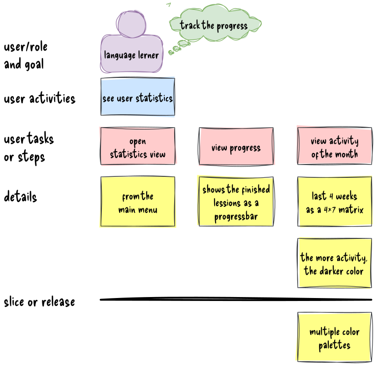
user story
as a <language learner>
I want to <see my stats>
in order to <track my progress>
the USM uses the user’s perspective to tell a story / narrative
overview first, zoom into details later
functional requirements define what a system is supposed to do
and
non-functional requirements define how a system is supposed to operate
[2]
functional
non-functional
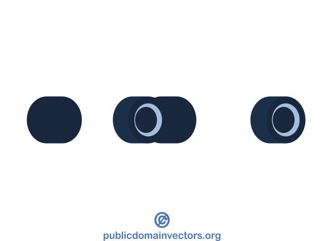
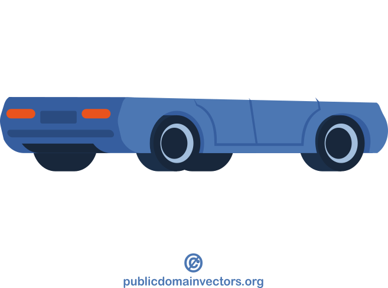
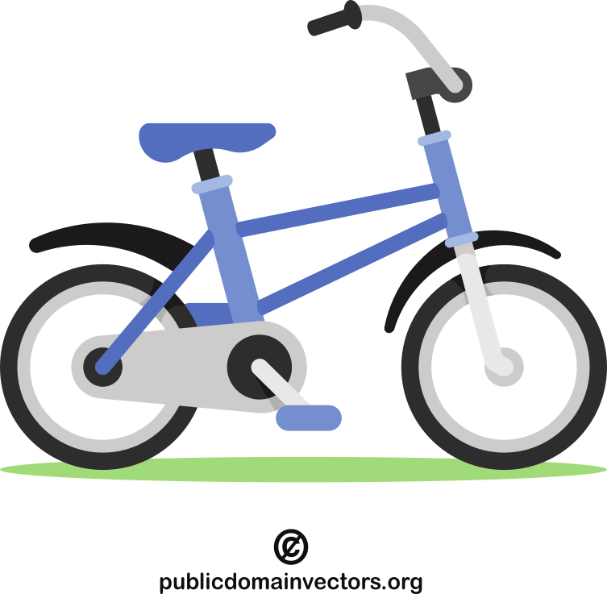
based on Making sense of MVP (Minimum Viable Product) by Henrik Kniberg
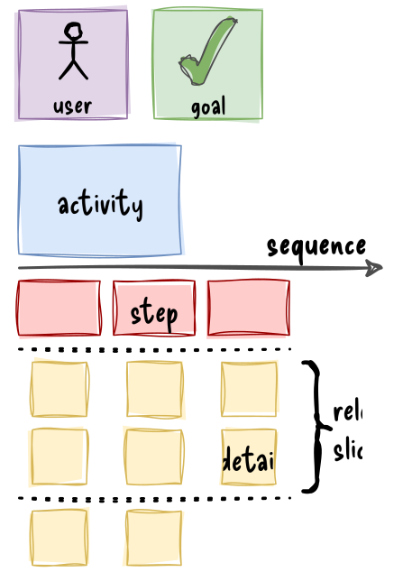
Gall’s law: A complex system that works is invariably evolved from a simple system that worked.
as a user I want to see my activity to track my progress
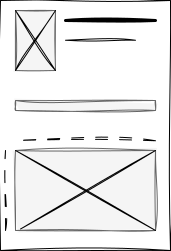
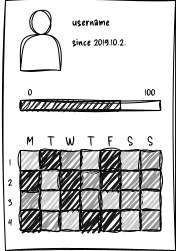
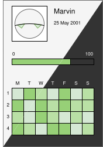
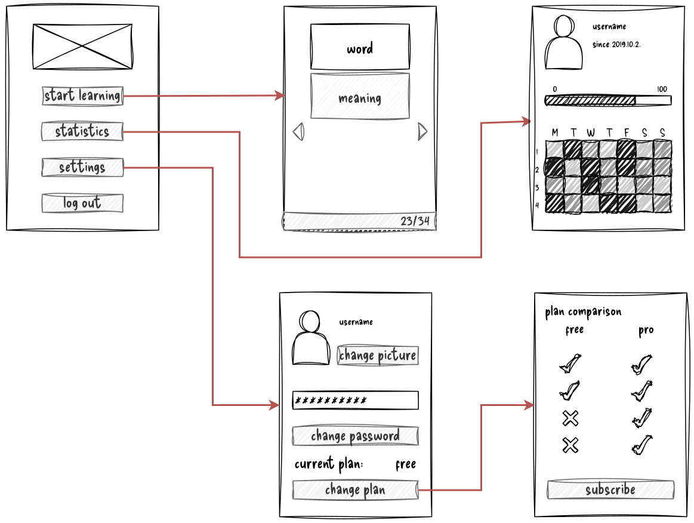
offline application, a simple case
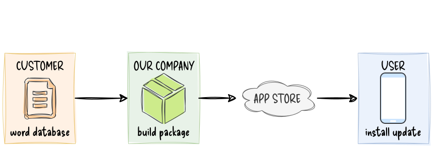
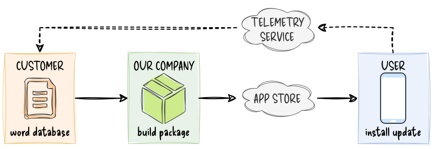
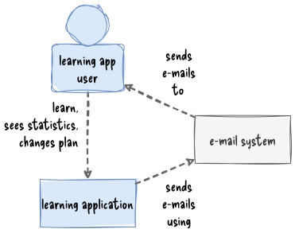
other possible users:
administrator, course planner
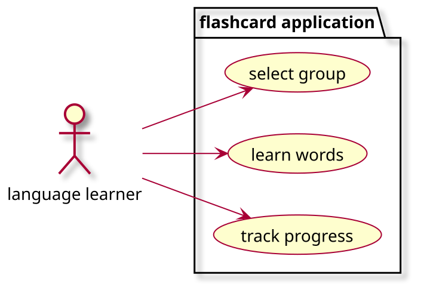
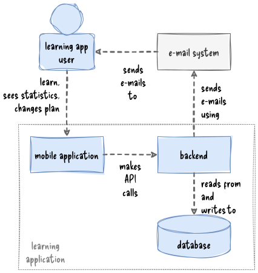
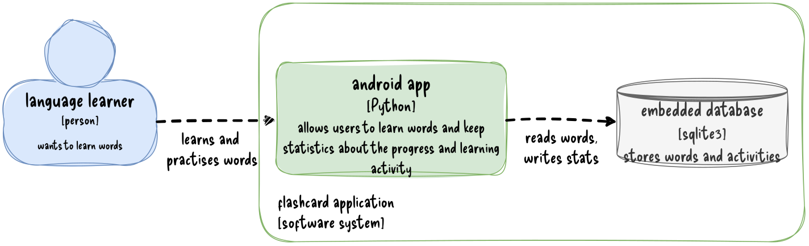
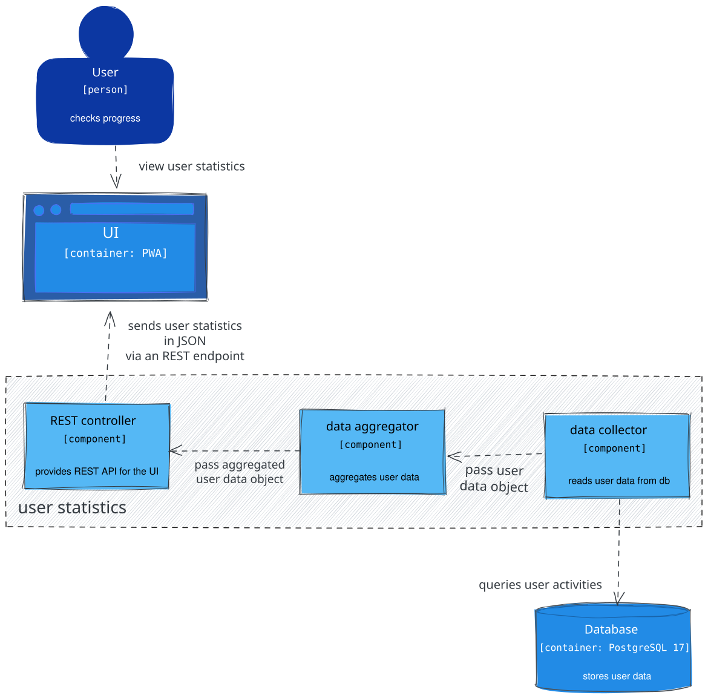
control flow? structure?
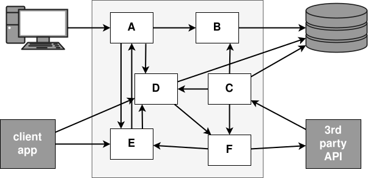
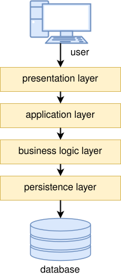
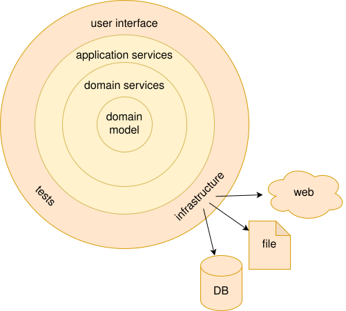
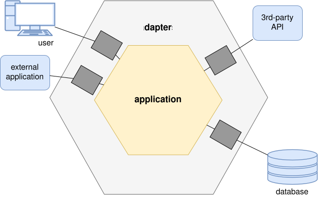
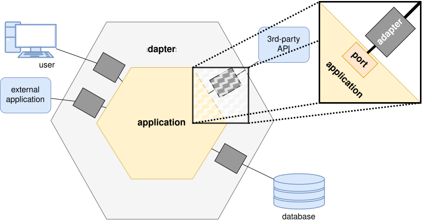
the most important elements of the design are the interfaces, hexagonal architecture focuses on them
focus on the interface
between the UI and
the user statistics
module
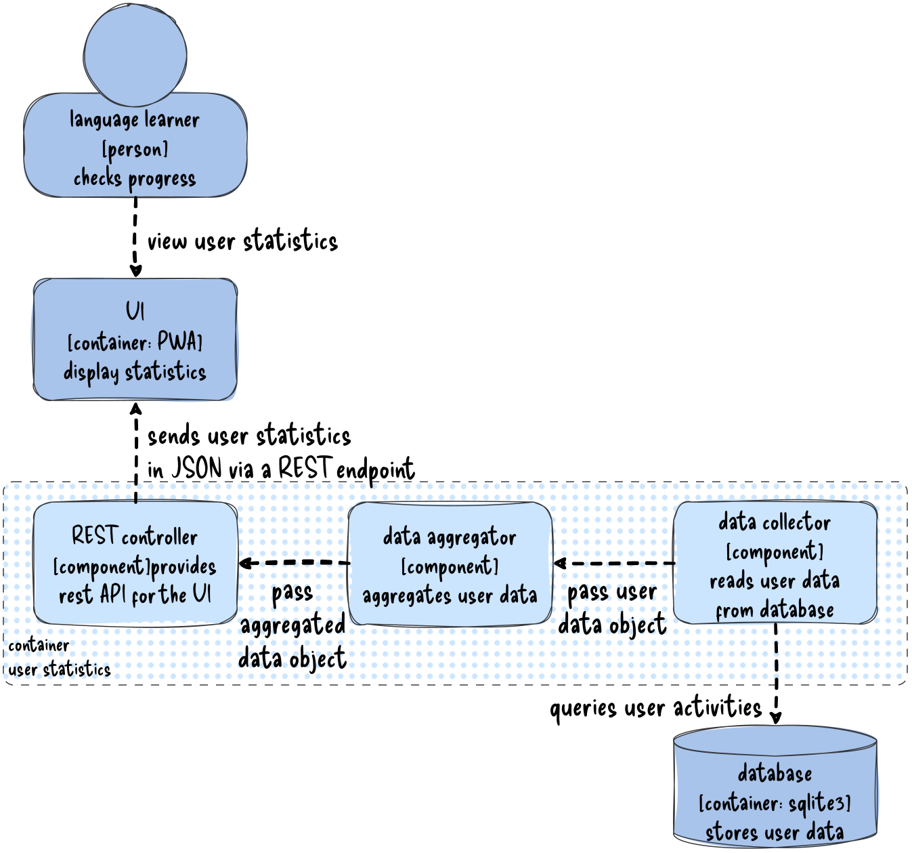
sends user statistics in JSON via a REST endpoint
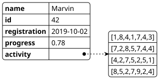
/user/<id>/statistics
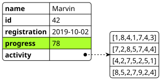
this will break the frontend
it is not just rude, but will waste the time of the other team (with pointless debugging)
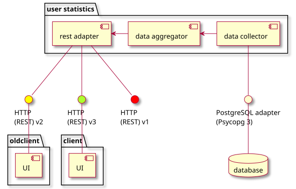
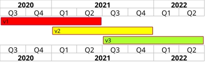
https://developers.facebook.com/v21.0/me?fields=id,name
With a sufficient number of users of an API, it does not matter what you promise in the contract: all observable behaviors of your system will be depended on by somebody.
– Hyrum Wright, 2012
think like a villian, someone who’s going to abuse the system that you’re designing and building
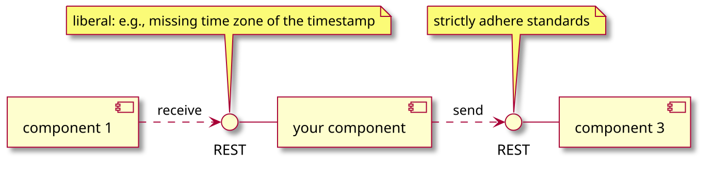
When receiving data, handle variations, minor errors, or deviations where possible. Don’t crash or reject communication over minor issues.
When your system emits data or interacts with the outside world, adhere closely to protocols and standards.
In modern times, overly liberal acceptance can sometimes mask errors, so this law is occasionally tempered with security considerations.
source: Laws of Software Engineering / Postel’s Law by Dr. Milan Milanović
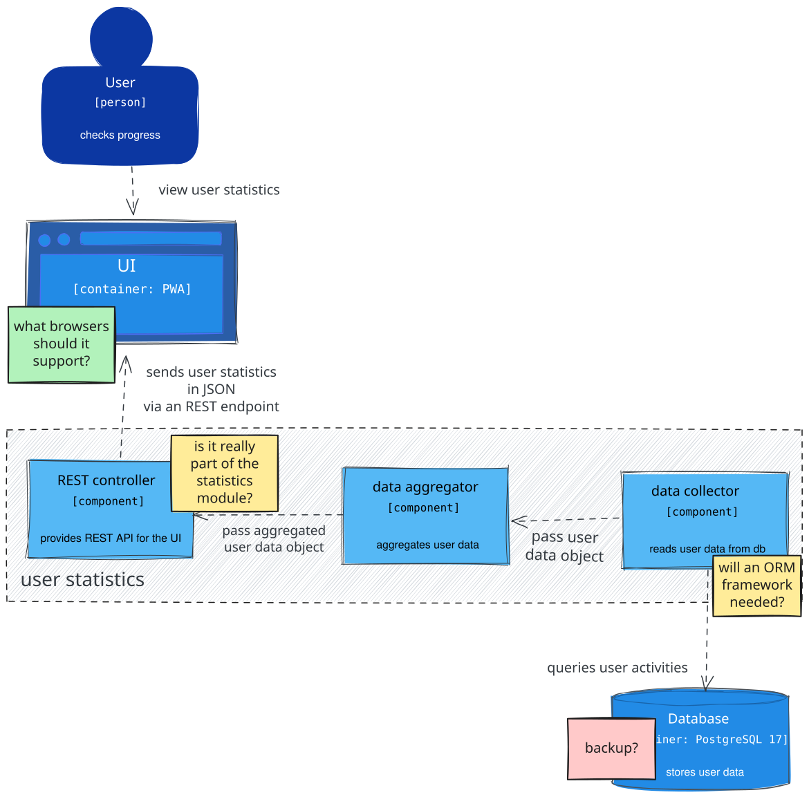
documenting findings | evaluating them | risk register | mitigation
| type | formality | led by | effort | documentation |
|---|---|---|---|---|
| informal | not formal | noone | minimal | undocumented |
| walkthrough | somewhat formal | authors | very low | normal, fault-finding |
| technical | less formal | trained moderator, not the author | moderate | more detailed |
| inspection | most formal | trained moderator | high | thorough; based on standards, checklists |
source: Code Review Guidelines for Humans [4]
source: Code Review Guidelines for Humans [4]
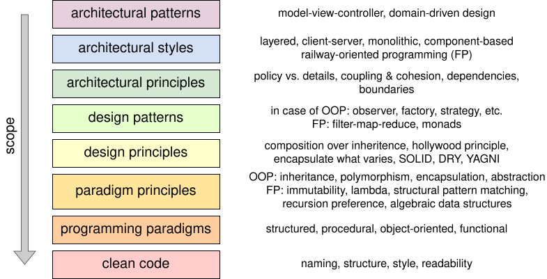
| principle | addresses |
|---|---|
| think before coding | wrong assumptions, hidden confusion, missing tradeoffs |
| simplicity first | overcomplication, bloated abstractions |
| surgical changes | orthogonal edits, touching code you shouldn’t |
| goal-driven execution | leverage through tests-first, verifiable success criteria |
Don’t assume. Don’t hide confusion. Surface tradeoffs.
Before implementing:
Explicit is better than implicit.
Minimum code that solves the problem. Nothing speculative.
Ask yourself: “Would a senior engineer say this is overcomplicated?” If yes, simplify.
Touch only what you must. Clean up only your own mess.
When editing existing code:
When your changes create orphans: - Remove imports/variables/functions that YOUR changes made unused. - Don’t remove pre-existing dead code unless asked.
The test: Every changed line should trace directly to the user’s request.
Define success criteria. Loop until verified.
Transform tasks into verifiable goals:
For multi-step tasks, state a brief plan:
1. [Step] → verify: [check]
2. [Step] → verify: [check]
3. [Step] → verify: [check]Strong success criteria let you loop independently. Weak criteria (“make it work”) require constant clarification.